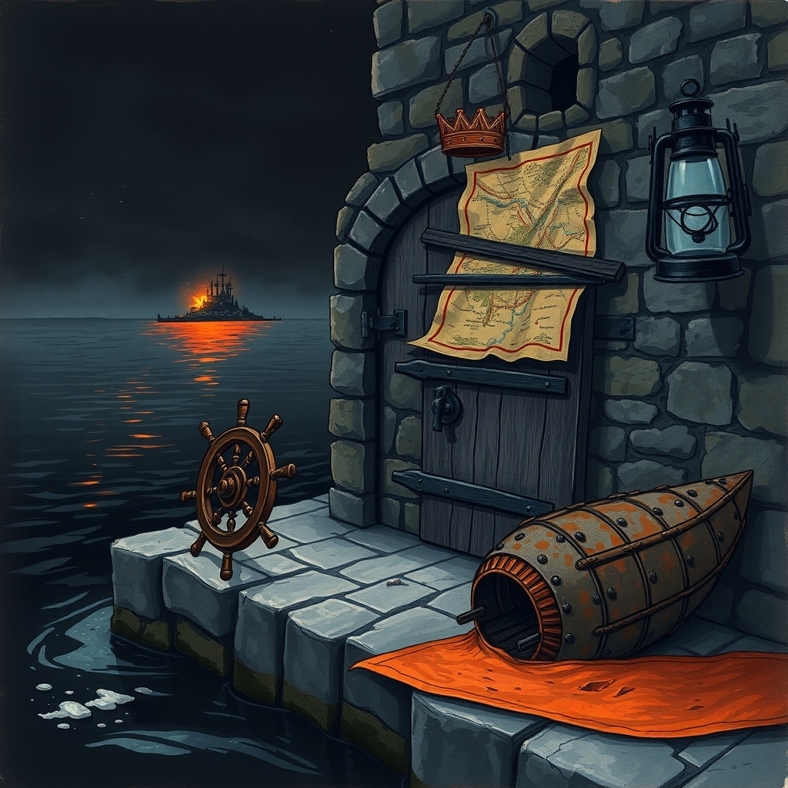
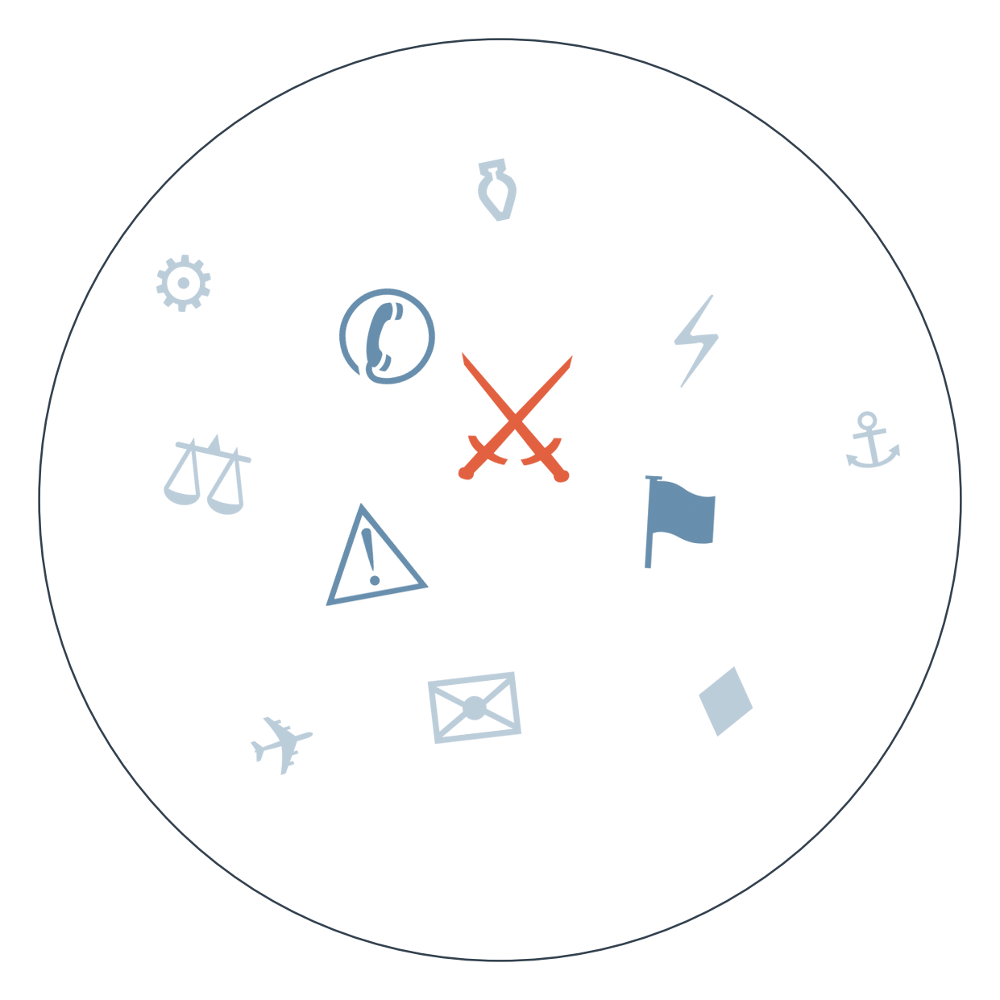

Ранковий бріф · огляд світової преси

Отже, ніч минула під ракетами в Ормузькій протоці. США вдарили по пускових установках КВІРІ на острові Ларак — це вже не анонімна витічка через Axios, як три дні тому, а підтверджена багатьма редакціями подія. У відповідь Іран, за власними державними медіа, завдав удару ракетами по американських базах "Рейн Хусейн" і "Аль-Азрак" у Йорданії. Пентагон офіційно все ще не підтвердив свою участь напряму, тож перед нами перший обмін ударами за місяць, і питання тепер не "чи буде ескалація", а "наскільки довгим буде цикл" (ескалація США-Іран, 4-й день).
Тим часом у Мила на Київщині лічба жертв стабілізувалась: за словами Зеленського, загиблих 38, поранених — уже 52, здебільшого мешканці пансіонату для літніх людей. Міноборони РФ офіційно заявило про підготовку "масованих ударів" по українських енергооб'єктах — це вже не погроза в загальних словах, а офіційно оголошена підготовка операції напередодні опалювального сезону (удари по ТЕК/ескалація проти Європи, 6-й день).
Ісландія тим часом відповіла на найбільшу інтригу вихідних: за офіційними даними виборчої комісії Ісландії, референдум про відновлення переговорів з ЄС програно з рахунком 52,8% проти 47,2%. Прем'єрка Кріструн Фрідсдоттір одразу окреслила рамки: парламент лише "обговорить" відкликання заявки, реальні переговори найближчим часом не відновляться. Для Брюсселя це прикрий сигнал — саме на Ісландію покладали надії як на приклад проти євроскептицизму.
Біля берегів Північного Кіпру продовжують рахувати жертви затонулого порома: капітана й сімох членів екіпажу заарештовано, слідство розпочато. Цифри загиблих і зниклих різняться між джерелами — від 6 до 8 загиблих і від 17 до 23 зниклих, — точна причина затоплення (технічна несправність чи вибух) поки не встановлена жодним джерелом.
І нарешті Непал: жертв повені майже 800, зниклими лишаються понад 3000, а автобус, який віз урятованих вижилих, розбився дорогою — ще 32 постраждалих. Тибетська сторона катастрофи, як і раніше, лишається практично невидимою в зведеннях.

Сюжет перший: удар США по Ларак і відповідь Ірану.
🇧🇷 Valor Econômico дивиться суто крізь ринкову призму: перший обмін ударами за місяць — і одразу ціна на нафту, наслідки для інвесторів.
Замовчують: офіційного підтвердження від Пентагону досі немає в жодному з джерел — усюди фігурує "американський посадовець" на умовах анонімності; кількість жертв удару по Ларак подається виключно за іранськими державними медіа.
Чому розходяться: балканські редакції драматизують загрозу через власну чутливість до регіональної ескалації Близького Сходу, яка традиційно б'є по цінах на енергоносії в Європі; ділова преса Латинської Америки дивиться на подію як на біржовий сигнал, відсторонено від військового виміру; скандинавські мовники історично тримають нейтральний, майже протокольний стиль подачі воєнних новин, орієнтований на аудиторію, яка довіряє факту більше за драму.
Сюжет другий: катастрофа порома біля Північного Кіпру.
🇦🇪 Al Arabiya називає меншу цифру — шість загиблих, — розходячись із рештою джерел майже вдвічі за кількістю зниклих.
Замовчують: жодне джерело не пояснює, чому судно затонуло на глибині 514 метрів так швидко — версія про вибух лишається лише цитатою одного свідка, не підтвердженою офіційно.
Чому розходяться: близькі до Північного Кіпру джерела фокусуються на швидкій кримінальній реакції влади невизнаної держави, яка прагне показати контроль над ситуацією; західноєвропейська преса тримає дистанцію й дає лише перевірені цифри; арабські медіа, ймовірно, спираються на більш ранній зріз даних, звідси розбіжність у підрахунках. Загалом розбіжності тут радше в ступені обережності подачі, ніж у суті версії подій — жодне джерело не пропонує альтернативної причини затоплення.
Ормузький цикл: 28.08 анонімний удар по Ларак без офіційного підтвердження → 31.08 обмін ударами, підтверджений численними редакціями, але не Пентагоном офіційно, — Іран відповідає по базах у Йорданії → веде до зростання ризику затяжного циклу ескалації в регіоні, включно з можливими новими економічними санкціями (див. РАДАР).
Норвезький перехід влади: до 28.08 смерть короля Гаральда V → 30.08 дату похорону оголошено раніше очікуваного терміну — 9 вересня → 01.09 очікується присяга Хокона VIII → веде до завершення транзиту монархії протягом вересня.
Brent перевищив 89 доларів (за даними Reuters) після ударів США по Ірану. Південнокорейський KOSPI впав на 2,58% (за Bloomberg) на тлі загострення в Ормузькій протоці. Трамп заявив про намір поповнити стратегічний резерв нафтою з Венесуели, але структура угоди й приватний партнер-оператор досі не розкриті. PMI Китаю зріс до 49,8 — перший сигнал стабілізації промисловості за кілька місяців.
Bild розганяє удари по Ірану заголовком "Мулли б'ють у відповідь!", тоді як якісна преса стримано фіксує факт без епітетів. Швейцарський Blick і британський Daily Mail деталізують драму Гранд-Каньйону — "я бачив багато тіл" — тоді як профільні видання обмежуються цифрою евакуйованих. Індійський Times Now в одному потоці подає падіння Sensex через ірано-американську напругу і гороскопи на тиждень — розрив між тим, що рухає ринки, і тим, що читає масовий читач, тут особливо наочний.
Підготовка масованих ударів РФ по енергетиці вимагає термінового посилення ППО й підтримки партнерів напередодні опалювального сезону. Зростання ціни на нафту через ірано-американську ескалацію (Brent понад 89 доларів) означає дорожче паливо і вищі витрати на логістику й опалення цієї зими. За даними De Telegraaf, Україна звернулася до Нідерландів із терміновим проханням про 2 мільярди євро "для захисту громадян" — сигнал, що поточного фінансування ППО не вистачає вже зараз.
Тибетська сторона повені лишається невидимою в зведеннях: китайські державні медіа дають лише загальні цифри "Непал-Китай", не виокремлюючи власні втрати — тема цензурована як незручна для показу масштабу лиха на власній території. Кількість суден, що очікують проходу через Ормузьку протоку, впала до п'яти на добу — про це пише лише галузеве видання gCaptain, тоді як загальна преса зосереджена виключно на військовому обміні ударами, а не на економічному ефекті блокади для світової торгівлі. Участь "Африканського корпусу" в придушенні заколоту в Нігері вперше офіційно визнана Росією, але деталі не розкриває жодна зі сторін — ні Кремль, ні хунта, а західна преса лише переказує факт визнання без спроби розслідувати масштаб залучення.
Середня впевненість: США готують санкції ще щонайменше проти одного банку третьої країни за операції з Іраном — подальша економічна ескалація паралельно з військовою. На основі: заява Бессента, одне джерело (The Globe and Mail).
Низька впевненість: шведська колумністка припускає, що поразка Ісландії на референдумі може зміцнити позиції Трампа щодо Гренландії. На основі: одна колонка в Dagens Nyheter.
Середня впевненість: заява Лаврова про готовність відновити роботу Арктичної ради попри звинувачення НАТО в "прямій загрозі" може бути сигналом вибіркової деескалації в Арктиці. На основі: одна цитата, Kommersant.
Низька впевненість: Кремль натякає, що можливий тристоронній саміт щодо завершення війни в Україні слугуватиме лише для фіксації вже досягнутих домовленостей, а не для нових перемовин. На основі: заява представника Кремля, одне джерело.
Рахунок: 1 з 3 (базово 1 з 3) — референдум в Ісландії не справдився, дата похорону короля Норвегії справдилась достроково, спільна заява ШОС щодо війни в Україні та санкцій не прозвучала.
Наші:
Протягом 7-14 днів США завдадуть ще щонайменше одного удару по цілях КВІРІ в Ормузькій протоці до 14.09.2026 Якщо так, це підтвердить перехід від разового епізоду до затяжного циклу обміну ударами
Хорватія до 14.09.2026 офіційно оголосить намір заблокувати переговорний розділ про вступ Сербії до ЄС через похорон Младича Це покаже, що політика пам'яті на Балканах прямо конвертується в гальмування євроінтеграції
Нідерланди до 14.09.2026 офіційно підтвердять або відхилять термінове прохання України про 2 мільярди євро Результат покаже, чи здатні партнери швидко закривати нові фінансові дірки оборони восени
Кажуть інші: суттєвих передбачень із чіткою розвилкою в сьогоднішньому потоці небагато. Томаш Друкер, міністр Словаччини (за Aktuality), очікує лише незначну втрату коштів через недотримання плану відновлення ЄС, без серйозних санкцій. Угорське видання 444 висловлює гіпотезу, що у разі завершення угоди Paramount "трампізм" може прийти на Голлівуд і CNN. Обидва — без чіткого горизонту й без реальної альтернативи наслідків.
Базова лінія у прогнозах. Відсоток «базово» — це ймовірність події за інерцією, якщо ніхто нічого не робитиме й нічого не зміниться. Друге число — наша впевненість. Прогноз має сенс лише тоді, коли ці числа розходяться: збіг означає, що ми просто описали поточний стан.
Відсотки в карті уваги. Частка країни в денному обсязі зібраних матеріалів. Не показник важливості події, а показник того, скільки місця країна зайняла в новинному потоці за добу. Різкий стрибок частки зазвичай означає, що в країні щось відбувається.